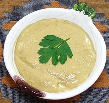

 |
Ocopa SaucePeru - Ocopa | ||||
| Makes: Effort: Sched: DoAhead: |
2-1/2 cup *** 45 min Most |
For the famous Peruvian Ocopa dish with Potatoes and Garnishes, see Ocopo Sauce with Potatoes. This recipe is for just the sauce which is also used in other ways. | |||
|
1-1/2 5 2 7 1 2 3 1 1/3 1/4 12 |
oz oz cl oz T c c oz t t oz |
Peanuts raw (1) Onion Garlic Queso Fresco (2) Olive Oil Aji Amarillo Paste (3) Huacatay Paste (4) The Roasted Peanuts Crackers (5) Salt Pepper Evaporated Milk (6) |
Make Sauce - (45 min)
|